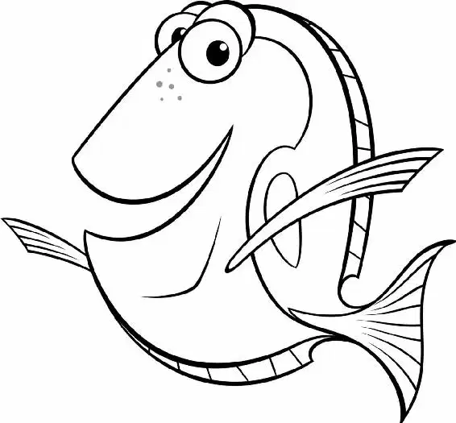

The next morning, Marlin opened his eyes—only to find Dory snoring loudly by his side. As he looked around, Marlin realized that they were hanging on top of the submarine by a strap, over a huge pit. And they were sleeping on the diver’s mask.
The mask! They still had it!
Marlin peered down. The pit seemed bottomless.
“Dory, wake up,” Marlin said, shaking her gently.
Dory mumbled something about a bad haircut but continued to sleep.
Marlin was getting frustrated. “Get up!” he said forcefully.
“Aagh!” Dory screamed and jumped, waking up.
At that moment, the submarine began to slide off the cliff. Dory and Marlin raced away from it just in time. They barely missed being crushed by the falling sub.
Marlin looked around frantically. “The mask,” he said. “Where’s the mask?”
Dory and Marlin both looked down and saw the mask disappear into the blackness of the deep water.
“No! No! Get it! Get the mask!” Marlin yelled. He swam after it, followed by Dory.
Blackness swallowed the two fish up. They couldn’t even see their own fins.
Marlin swam up to the lighter-colored water, panting with fear.
“It just keeps going on, doesn’t it?” Dory said.
She swam a little deeper, then popped back up next to Marlin. She looked surprised to see him. “Hey! What are you doing?”
“It’s gone. I’ve lost the mask,” Marlin said.
“What, did you drop it?” asked Dory innocently.
“You dropped it!” Marlin cried. “That was my only chance of finding my son. And now it’s gone.”
“Hey, Mr. Grumpy Gills,” Dory sang out. “When life gets you down, you know what you gotta do?”
“I don’t want to know what you gotta do,” Marlin said crossly.
“Just keep swimming,” Dory told him. “What do we do? We swim, swim.”
Slowly, he swam down with Dory. Farther… farther… farther… into the deep. “Dory,” he said after a while. “Do you see anything?”
Dory gasped, unable to see in the total darkness. “Who’s that?”
“Who could it be? It’s me!” Marlin replied.
“Are you my conscience?” asked Dory.
“Yeah, yeah, yeah. I’m your conscience. Now, I want you to tell me—do you see anything?” Marlin asked.
“I see a light! Over there!” Dory exclaimed.
“I see it, too!” Marlin cried.
A small glowing ball of light floated in the distance. Marlin couldn’t look away. It had him under some kind of spell. It made him feel happy.
It apparently had the same effect on Dory. “It’s so pretty. I want to touch it,” she said.
The light danced in the water.
Dory and Marlin followed the light. Marlin thought it was strange that the light made him feel happy. But then he had a funny feeling. Like something was watching him. He turned around. A deadly anglerfish with huge fangs floated right behind them! The light dangled from its antenna, like bait. “Good feeling’s gone,” he said to Dory.
Marlin and Dory raced into the darkness. The anglerfish chased them. Its glowing orb gave them their only light.
“I can’t see! I don’t know where I’m going!” Marlin cried.
Suddenly, the light fell on something familiar. The diver’s mask! But the anglerfish was gaining on them—its jaws ready to snap!
Marlin pulled Dory down deeper. The anglerfish shot past, missing them in the darkness.
But they were safe only for a moment. The anglerfish came back, searching for them. It swung close to Marlin, lighting the water nearby.
“Hey, look, a mask!” Dory exclaimed. “Read it!” Marlin said as he launched himself forward in the water, leading the anglerfish away.
“Uh… I’m sorry, but if you could just bring him a little closer?” Dory asked. “I kinda need the light.”
Marlin swam all around Dory with the anglerfish right on his tail. He ducked between two rocks, safe for a second. He grabbed the antenna light and directed it toward Dory.
“The first line is ‘P. Sherman,’ ” Dory said. “Second line… ‘42 Waaa—’ ”
Marlin was yanked up and away from the rocks. The anglerfish swallowed him and its own antenna whole.
In the sudden darkness, Dory said, “Light, please.”
Inside the anglerfish, Marlin screamed. The anglerfish opened its mouth and Marlin shot out—along with the light.
“The second line is ‘42 Wallaby Way,’ ” Dory said.
“That’s great,” Marlin said anxiously. “Just finish up here. Speed-read.”
As the furious anglerfish barreled straight toward them, Dory shouted out, “ ‘Sydney’! It’s ‘Sydney’!”
“Duck!” Marlin cried.
Dory dove as Marlin lifted the mask.
The anglerfish crashed into the mask, sending them into a spin.
Then all was quiet. Marlin squinted. He thought for sure he had been eaten. The anglerfish was now wedged between the mask and a rock. It flapped around helplessly, stuck.
“Ha, ha!” Marlin laughed as he and Dory swam toward the surface.
“No eating here tonight!” the two fish sang together.
Then Marlin turned to Dory. “So what did the mask say?”
“ ‘P. Sherman. 42 Wallaby Way, Sydney.’ ” She gasped, not believing it herself. “I remembered what it said! I usually forget things, but I remembered it that time. P. Sherman, 42—”
“Wait!” Marlin interrupted. “Now, where is that?”
“I don’t know,” Dory replied. “But who cares? I remembered!”
